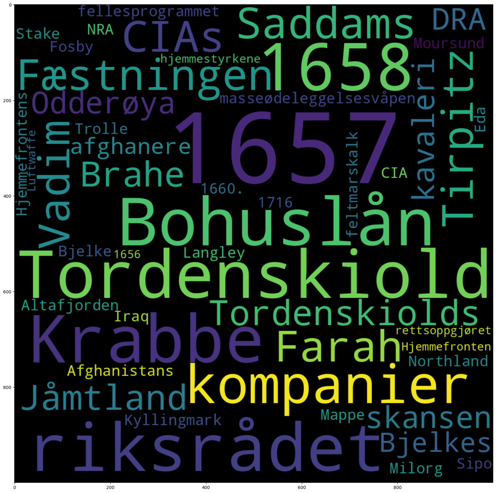

1.9. Sammenlign metadata#
from dhlab.api.dhlab_api import get_document_frequencies
from dhlab import Corpus, Counts, totals
import dhlab.nbtext as nb
---------------------------------------------------------------------------
ModuleNotFoundError Traceback (most recent call last)
Cell In[1], line 3
1 from dhlab.api.dhlab_api import get_document_frequencies
2 from dhlab import Corpus, Counts, totals
----> 3 import dhlab.nbtext as nb
ModuleNotFoundError: No module named 'dhlab.nbtext'
1.9.1. Undersøk korpus med metadata#
En viktig metode i undersøkelse av metadata og tekster er grafer og nettverk.
Metadata er alt som er om teksten, fra forfatter til forlag. Også innholdsord kan sees på som metadata.
1.9.1.1. Bygg korpus#
Korpuset defineres med metadata som dewey, emneord, navn , år, etc. Her kan Webdewey være til god hjelp.
Se eksempelfil om Korpusbygging for ulike måter å definere korpus.
bøker = Corpus(
doctype="digibok",
freetext="krig OR krigen OR soldater",
from_year=1950,
to_year=2010,
ddk="9*",
lang='nob',
limit=30
)
bøker.frame.loc[:, ["title", "authors", "year"]]
| title | authors | year | |
|---|---|---|---|
| 0 | Krabbekrigen og gjenerobringen av Jämtland 165... | Johnsen , Arne Odd | 1967 |
| 1 | Kvinne blant krigsherrer : Afghanistans modigs... | Joya , Malalai / O ' Keefe , Derrick / Jensen ... | 2009 |
| 2 | Kongsvingeravtalen 1809 : spiren til norsk sel... | Alnæs , Karsten / Hagerud , Trond | 2009 |
| 3 | Nordens løve : Karl 12. i Norge : felttogene i... | Bjerke , Alf E. / Hauge , Andreas | 1992 |
| 4 | Biafra : som jeg ser det | Rosen , Carl Gustaf von / Norstrøm , Øyvind | 1969 |
| 5 | Militær motstand i nord 1940-45 : jakten på Ti... | Pedersen , Gunnar | 1982 |
| 6 | Tortur , flukt og gisler til tross : hemmelige... | Nygaard , Herluf | 1982 |
| 7 | Kavaleristen | Aarset , Ane-Charlotte Five / Revhaug , Bernt ... | 2007 |
| 8 | Brystkaramellene : fra XU til Grini | Fodstad , Bjørg | 2001 |
| 9 | Fellesskap i krig og fred : erindringer 1940-45 | Gerhardsen , Einar | 1982 |
| 10 | Frederikshalds krigshistorie : 1658 , 1659 , 1... | Krag , Hans Peter Schnitler | 2003 |
| 11 | Minner fra Solferino | Dunant , Henri / Thorvaldsen , Siren | 1999 |
| 12 | Sola 1930-2000 . B. 1 : Hverdagsliv , krigen 1... | Skjørestad , Per | 2002 |
| 13 | Så kom krigen til Brandbu : et 50 års minne | Stenersen , Helge | 1990 |
| 14 | Fra hesterygg til stridsvogn | Frøystad , Ivar | 1979 |
| 15 | Kristiansand i krig 9. april 1940 | Mæsel , Knut | 1995 |
| 16 | Mer enn 1000 dager : blant fanger og voktere i... | Viken , Kaare | 1984 |
| 17 | Tyske soldater på flukt | Heide , Eivind | 1988 |
| 18 | Norge i krig | Auberg , Arne | 1965 |
| 19 | Kodenavn Curveball : om spioner , løgner og kr... | Drogin , Bob / Fosser , Per Einar / Aspen , Nina | 2008 |
| 20 | [ Sør-Varangers historie ] . [ 4 ] : Sør-Varan... | 1999 | |
| 21 | Etterkrigshistorie : emner fra norsk historie ... | 1973 | |
| 22 | Kald krig og varme vennskap : erindringer fra ... | Johansen , Jahn Otto | 2000 |
| 23 | Norge i krig 1940-1945 : frigjøringsjubileet 1... | 1995 | |
| 24 | Tordenskiold : Peter Wessel og hans tid | Eilstrup , Per / Hegland , Jon Rustung | 1968 |
| 25 | Balkan-ekspressen : fragmenter fra den andre s... | Drakulić , Slavenka / Henriksen , Ginni Schuls... | 1994 |
| 26 | " Men seier ' n var vår " : søkelys på omveltn... | Gogstad , Anders Chr . | 2003 |
| 27 | Hvem kan glemme dette ? : barn i Terezín 1941-... | Gaarder , Inger Margrethe / Zdekauerova , Dori... | 1984 |
| 28 | Den tredje front | Liversidge , Douglas / Schøning , Einar Th . | 1961 |
| 29 | Minner fra krigen : Våpenstaben / D 13 og 100 ... | Graff , Kjell | 1991 |
1.9.1.2. Undersøk forskjeller#
1.9.1.2.1. Undersøk forskjeller internt i korpuset#
Her samler vi sammen alle bøkene i korpus og summerer. Men først la oss se på en del av korpuset som en dokument term matrise
# tar de fem første og henter frekvensene for alle bøkene
bøker_dtm = Counts(bøker.head(5))
bøker_dtm
| 100035999 | 100039493 | 100134522 | 100191584 | 100271808 | |
|---|---|---|---|---|---|
| , | 1501 | 6235 | 4095 | 1804 | 1173 |
| . | 1438 | 10111 | 4695 | 3299 | 1324 |
| og | 1002 | 3547 | 2933 | 1641 | 978 |
| i | 943 | 4049 | 2590 | 1801 | 868 |
| som | 799 | 1318 | 1643 | 919 | 408 |
| ... | ... | ... | ... | ... | ... |
| flodbølge | 0 | 0 | 0 | 1 | 0 |
| slottene | 0 | 0 | 0 | 0 | 1 |
| rennestenene | 0 | 0 | 0 | 1 | 0 |
| hollåndsk-engelska | 0 | 1 | 0 | 0 | 0 |
| luksusbil | 0 | 0 | 1 | 0 | 0 |
35275 rows × 5 columns
1.9.1.2.2. Visualiser med varmekart#
Et varmekart gjør det enklere å få øye på likhet og variasjon i tallene.
nb.heatmap(bøker_dtm.frame.head(10), color="#045599")
| 100035999 | 100039493 | 100134522 | 100191584 | 100271808 | |
|---|---|---|---|---|---|
| , | 1501 | 6235 | 4095 | 1804 | 1173 |
| . | 1438 | 10111 | 4695 | 3299 | 1324 |
| og | 1002 | 3547 | 2933 | 1641 | 978 |
| i | 943 | 4049 | 2590 | 1801 | 868 |
| som | 799 | 1318 | 1643 | 919 | 408 |
| å | 629 | 1541 | 2186 | 803 | 313 |
| av | 593 | 2004 | 1748 | 990 | 419 |
| til | 588 | 2826 | 1689 | 1040 | 472 |
| en | 530 | 1253 | 1316 | 786 | 418 |
| den | 509 | 1280 | 772 | 948 | 355 |
1.9.1.3. Undersøk forskjeller med frekvenser fra bokhylla#
Vi teller opp tokens i korpuset med Counts. Dette kan ta litt tid.
count_corpus = Counts(bøker)
Referansekorpus Kommandoen under lager et referansekorpus av de 150 000 vanligste tokenene i vår samling.
totals = totals(150000)
# Summer tokens fra korpus
bøker_total = count_corpus.frame.sum(1).to_frame("count")
# Frekvensliste for korpus
bøker_total
| count | |
|---|---|
| . | 113658 |
| , | 81227 |
| og | 57715 |
| i | 52350 |
| var | 32667 |
| ... | ... |
| newsarticle.aspx | 1 |
| 30.9.44 | 1 |
| etser | 2 |
| Sipos | 1 |
| ambulante | 1 |
133530 rows × 1 columns
For å lette arbeidet med å tolke forskjeller normaliserer vi frekvensene til tall mellom 0 og 1.
nb.normalize_corpus_dataframe(totals)
nb.normalize_corpus_dataframe(bøker_total)
True
forskjell = bøker_total.loc[:, "count"] / totals.freq
bøker_typiske_ord = forskjell.sort_values(ascending=False).to_frame("ratio")
bøker_typiske_ord.head(50)
| ratio | |
|---|---|
| 1657 | 531.189402 |
| Tordenskiold | 272.705875 |
| 1658 | 226.553103 |
| Krabbe | 217.375454 |
| riksrådet | 213.979122 |
| Bohuslån | 210.198293 |
| kompanier | 198.486381 |
| Fæstningen | 186.544702 |
| Tirpitz | 177.537529 |
| CIAs | 175.219649 |
| Farah | 173.697664 |
| Saddams | 169.374295 |
| Vadim | 164.000476 |
| Tordenskiolds | 162.935491 |
| Jåmtland | 159.034506 |
| Brahe | 158.314895 |
| Odderøya | 141.466729 |
| DRA | 137.719762 |
| kavaleri | 135.580456 |
| skansen | 133.631634 |
| Bjelkes | 128.494624 |
| afghanere | 125.808732 |
| masseødeleggelsesvåpen | 124.502088 |
| Hjemmefrontens | 120.398465 |
| feltmarskalk | 116.194677 |
| NRA | 115.949008 |
| fellesprogrammet | 115.182968 |
| Stake | 113.766603 |
| Fosby | 111.838386 |
| Altafjorden | 109.539505 |
| Afghanistans | 109.214731 |
| 1716 | 108.30952 |
| Northland | 107.734601 |
| Sipo | 105.649754 |
| Eda | 103.957965 |
| Iraq | 94.681898 |
| Kyllingmark | 92.743272 |
| CIA | 92.691701 |
| Moursund | 92.177354 |
| Mappe | 91.143264 |
| Milorg | 90.737028 |
| Trolle | 89.014351 |
| Bjelke | 87.287726 |
| 1660. | 87.118671 |
| Langley | 86.616419 |
| hjemmestyrkene | 86.51474 |
| rettsoppgjøret | 86.493476 |
| Luftwaffe | 85.788077 |
| 1656 | 84.570521 |
| Hjemmefronten | 84.452247 |
1.9.2. Visualiser som ordsky#
nb.cloud((bøker_typiske_ord/bøker_typiske_ord.sum()).head(50))
